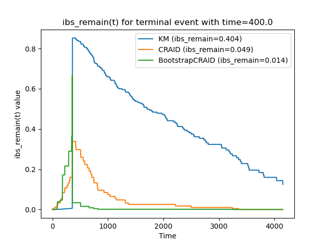
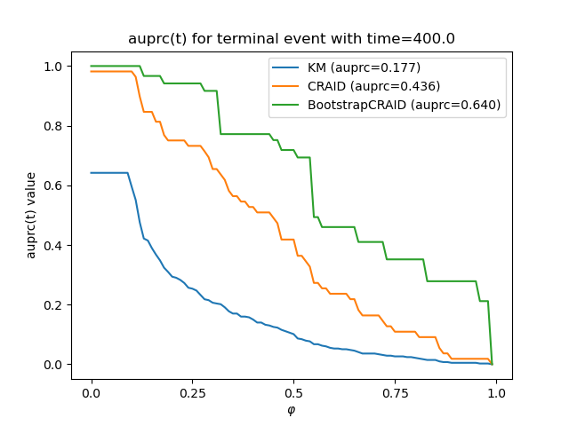

Note
Go to the end to download the full example code
Base User guide
# Author: Iulii Vasilev <iuliivasilev@gmail.com>
#
# License: BSD 3 clause
First, we will import modules and load data
import survivors.datasets as ds
import survivors.constants as cnt
X, y, features, categ, sch_nan = ds.load_pbc_dataset()
bins = cnt.get_bins(time=y[cnt.TIME_NAME], cens=y[cnt.CENS_NAME])
print(bins)
[ 41 42 43 ... 4189 4190 4191]
Build Nonparametric KaplanMeier model and visualize survival function
import survivors.visualize as vis
from survivors.external import KaplanMeier
km = KaplanMeier()
km.fit(durations=y["time"], right_censor=y["cens"])
sf_km = km.survival_function_at_times(times=bins)
vis.plot_survival_function(sf_km, bins)
bins_short = [50, 100, 1000, 2000, 3000]
sf_km_short = km.survival_function_at_times(times=bins_short)
vis.plot_survival_function(sf_km_short, bins_short)
Build Tree
from survivors.tree import CRAID
cr = CRAID(criterion='logrank', depth=2, min_samples_leaf=0.1, signif=0.05,
categ=categ, leaf_model="base")
cr.fit(X, y)
sf_cr = cr.predict_at_times(X, bins=bins, mode="surv")
chf_cr = cr.predict_at_times(X, bins=bins, mode="hazard")
print(chf_cr.shape)
(418, 4151)
Plot dependencies
import matplotlib.pyplot as plt
cr.visualize(target=cnt.TIME_NAME, mode="surv")
image = plt.imread(f'{cr.name}.png')
fig, ax = plt.subplots(figsize=(10, 7))
ax.imshow(image)
ax.axis('off')
plt.show()

Individual prediction
print("Target:", y[0])
print(cr.predict(X, target=cnt.TIME_NAME)[0])
print(cr.predict(X, target=cnt.CENS_NAME)[0])
print(cr.predict(X, target="depth")[0])
Target: (True, 400.)
847.4363636363636
0.9272727272727272
2.0
Building ensembles of survival trees
from survivors.ensemble import BootstrapCRAID
bstr = BootstrapCRAID(n_estimators=10, size_sample=0.7, ens_metric_name='IBS_REMAIN',
max_features=0.3, criterion='peto', depth=10,
min_samples_leaf=0.01, categ=categ, leaf_model="base")
bstr.fit(X, y)
sf_bstr = bstr.predict_at_times(X, bins=bins, mode="surv")
fitted: 10 models.
Evaluation of models
import survivors.metrics as metr
mean_ibs = metr.ibs(y, y, sf_bstr, bins, axis=-1)
mean_ibs # 0.071
ibs_by_obs = metr.ibs(y, y, sf_bstr, bins, axis=0)
ibs_by_obs # [0.0138, 0.038, ..., 0.0000, 0.0007]
ibs_by_time = metr.ibs(y, y, sf_bstr, bins, axis=1)
ibs_by_time # [0.0047, 0.0037, ..., 0.0983, 0.3533]
print(ibs_by_time.shape)
(4151,)
Predict comparison
vis.plot_func_comparison(y[0],
[sf_km, sf_cr[0], sf_bstr[0]],
["KM", "CRAID", "BootstrapCRAID"])
Quality comparison in time
vis.plot_metric_comparison(y[0], [sf_km, sf_cr[0], sf_bstr[0]],
["KM", "CRAID", "BootstrapCRAID"], bins, metr.ibs_remain)
vis.plot_metric_comparison(y[0], [sf_km, sf_cr[0], sf_bstr[0]],
["KM", "CRAID", "BootstrapCRAID"], bins, metr.auprc)
- 
- 
Total running time of the script: (0 minutes 10.627 seconds)